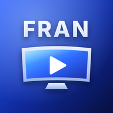

Fran TV
Toca cualquier canal de la lista para verlo en vivo.
Conectando…
Puede estar fuera del aire o bloqueado en tu región.
Pega un enlace de canal .m3u8 o de una lista .m3u. Se guarda en “Mis canales” en este teléfono.
Tenla en tu pantalla de inicio como una app, a pantalla completa.